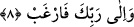

Ebû Medyen Mağribî (k.s.) bu âyetin te’vilinde buyurmuştur ki; kâinatın
müşâhedesinden ayrıldığında, gönlünü Rahman’ın cemâlinin müşâhedesine bağla.
Keşşaf’ta şöyle deniyor: Bazı râfızîler bu âyeti “fansıb” şeklinde okumakla bidate
düşmüşlerdir. Çünkü onlar bu kırâatleriyle “Ali’yi imamete getir” anlamını kasdetmiş
oluyorlar. Eğer bu davranış râfizîler için doğru ise o zaman bu âyeti “fansab” şeklinde
okuyup “Ali’ye buğz et ve ona düşman ol” şeklinde mânâ verenlerin bunu yapmaya
hakları olmuş olur.
8. Ve yalnız Rabbine yönel.
“Ve yalnız” bir olan “Rabbine yönel.” Âyette yönel anlamındaki “ferğab” fiilinin
kökü olan “rağbet” herhangi bir şeyde genişlik demektir. Bununla iradede genişlik
kasdedilmektedir. Arapçada “kişi herhangi bir şeyi kişi hırsla arzuladı ve istedi, anlamı
kasdedilir. Yine “rağibe anhu” dendiğinde bununla kişinin isteğini o nesneden çevirmiş
olduğu ve onu istemediği anlamı kasdedilmiş olur.
Kamus’un beyânına göre; “rağibe fiyhi” istedi, irade etti, “rağibe anhu” ise onu
istemedi, “rağibe ileyhi” ise yakardı ve diledi demektir. Buna göre âyetin mânâsı
şöyledir: Boş kaldın mı hemen başka işe koyul ve başkasından değil yalnız O’ndan
isteyerek Rabbine yönel. Çünkü sana yardım edebilecek, imdadına koşabilecek sâdece
O’dur, başkası değil.
Senin sözün kurb/yakınlık dergâhında makbuldür ve senin güzel dâvetlerin kabul
mahallindedir.
Kevn ü mekânın maksadı senin keremindir
Senin maksûdun ne ise Allah hepsini verir.
Büyüklerden birisinden nakledilir: İnşirah sûresinin mânâsı şudur: Senin enaniyyet
örtünü kaldırmak, sûretiyle göğsünü açıp genişletmedik mi? İnsaniyyet perdeni
kaldırarak ahadiyyetimizin hakikatini, samediyyetimizin yüzünü göstermedik mi? Kalp
sırtına ağır gelen varlık günahını senden kaldırmadık mı? Bunu zılli ve suri vücudunun
faniliğini, ayni ve hakîkî vücudunun bâkiliğini sana öğreterek yapmadık mı? Seni bizde
fâni ve bizde bâki kılarak zikrini yüceltmedik mi? Senin zikrini ve şânını senin hakkında
vahyettiğimiz; “ve şüphesiz en son varış rabbinedir.” (Necm, 53/42) âyet-i kerimesi
ile hitabın yüksek seviyesine erdirmedik mi? Bu âyette yer alan “el münteha/varış yeri”,
bittiği son noktadan maksad herkesin rab olarak kabul ettiği ne kadar rab varsa bütün
rablerin ve ilahi isimlerin sona erdiği; bittiği nokta demektir. İşte Allah bütün rablerin
sona erdiği ve bittiği noktadaki ilah ise sen de kevni hakikatlerin tümünün ulaşmış
olduğu noktasın. İşte senin şânın böylece yücelmiş oluyor ve sen herkesin efendisi